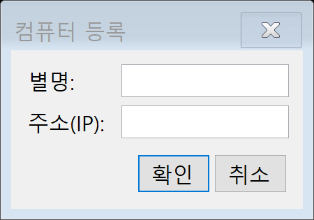
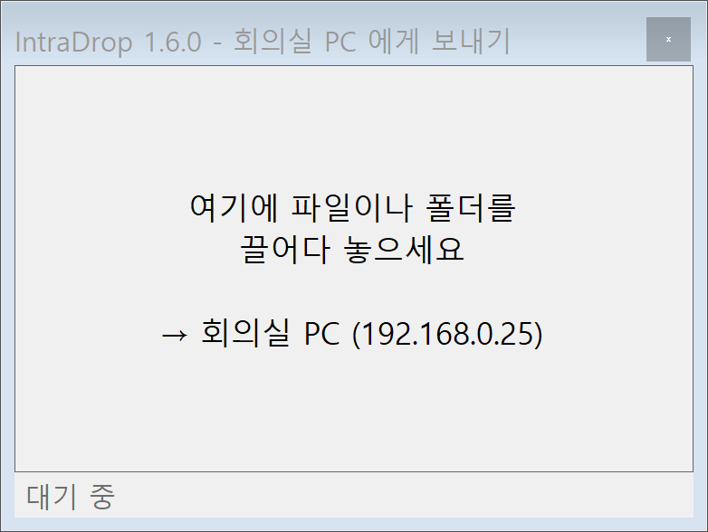
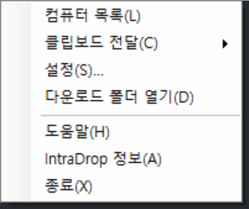
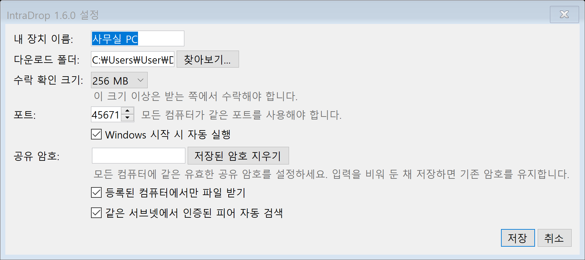

1. 시작 전 준비
두 컴퓨터에 IntraDrop 설치
보내는 컴퓨터와 받는 컴퓨터 모두에 같은 최신 버전을 설치하고 IntraDrop을 실행합니다.
상대 컴퓨터의 주소 확인
등록할 상대 컴퓨터에서 IPv4 주소 또는 컴퓨터 이름을 확인합니다. 예: 192.168.0.25. 두 컴퓨터가 같은 사내망·가정망·연결 가능한 VPN에 있어야 합니다.
포트와 공유 암호 맞추기
모든 컴퓨터에서 포트가 같아야 합니다(기본값 45671). 공유 암호를 사용할 경우 모든 컴퓨터에 같은 암호를 설정합니다.
2. 외부 컴퓨터 등록
작업 표시줄 알림 영역의 IntraDrop 아이콘을 더블클릭해 컴퓨터 목록을 열고 추가를 누릅니다.
별명에는 알아보기 쉬운 이름을, 주소(IP)에는 상대 컴퓨터의 IPv4 주소나 컴퓨터 이름을 입력한 뒤 확인을 누릅니다.

옛 IP 항목과 새 항목이 함께 남았다면: 기존 별명의 옛 항목을 선택하고 수정 → 현재 IP 입력 → 동일 컴퓨터 확인을 진행하세요. 현재 IP의 등록된 장치를 인증한 뒤 기존 별명을 유지해 하나로 합칩니다. 컴퓨터 이름만으로 임의로 합치지는 않습니다.
3. 파일 또는 폴더 보내기
방법 A — 트레이 목록에서 보내기
- 컴퓨터 목록에서 대상을 더블클릭하거나 선택 후 보내기 창을 누릅니다.
- 파일 또는 폴더를 보내기 창의 점선 영역으로 끌어다 놓습니다.
- 상태 줄에서 진행률과 완료 여부를 확인합니다.

방법 B — 탐색기 우클릭 메뉴
- 탐색기에서 파일 또는 폴더를 선택하고 우클릭합니다.
- 보내기 → IntraDrop - 컴퓨터 이름을 선택합니다. 예: IntraDrop - Workstation. 다운로드한 설치 파일도 실행하지 않고 전송합니다.
- Windows 11에서는 먼저 추가 옵션 표시를 선택해야 합니다.
4. 클립보드 전달
- 텍스트·이미지 또는 탐색기의 파일·폴더를 Ctrl+C로 복사합니다.
- IntraDrop 트레이 아이콘 우클릭 → 클립보드 전달 → 등록된 목적 컴퓨터를 선택합니다.
- 받는 컴퓨터에서 클립보드 수신 완료 알림을 확인하고 원하는 앱이나 탐색기에서 Ctrl+V로 붙여넣습니다.

받은 파일은 다운로드 폴더 아래 전송별 폴더에 저장됩니다. 같은 이름은 구분하며, 잘라내기 상태에서도 원본은 삭제하지 않습니다. 클립보드를 다른 앱이 사용해 복사에 실패하면 이미 받은 파일은 보관하고 실패 알림을 표시합니다. 큰 파일은 기존 설정에 따라 수락해야 합니다.
HTML·RTF 서식은 일반 텍스트로 전달합니다. 앱 전용 OLE 객체·가상 첨부 파일은 파일로 저장한 뒤 복사하세요. 연결점·심볼릭 링크는 실제 파일·폴더로 바꿔 선택하세요. Windows 알림 설정으로 풍선이 숨겨져도 수신 클립보드 등록은 동작합니다.
5. 설정과 보안
트레이 아이콘 우클릭 → 설정에서 장치 이름, 다운로드 폴더, 수락 확인 크기, 포트, 공유 암호와 수신 허용 범위를 관리합니다.

| 설정 | 권장 사용법 |
|---|---|
| 공유 암호 | 파일을 주고받는 모든 컴퓨터에 동일한 유효한 암호를 설정합니다. 인증과 AES-256 암호화가 활성화됩니다. |
| 등록된 컴퓨터에서만 파일 받기 | 모르는 장치의 전송을 거부하려면 켭니다. |
| 인증된 피어 UDP 자동 검색 | 켜면 같은 서브넷의 인증된 UDP 힌트로 주소 변경 후보를 찾습니다. 프로그램 시작·재시작 또는 네트워크 주소 변경 직후 최대 3회 짧게 재시도하는 등록 피어 직접 IP 알림은 이 설정과 무관하며, 같은 공유 암호와 인증된 장치 ID가 필요합니다. |
6. 연결되지 않을 때
- 양쪽 컴퓨터에서 IntraDrop이 실행 중인지 확인합니다.
- 등록 주소, 포트, 공유 암호가 서로 맞는지 확인합니다.
- 컴퓨터 목록의 새로고침을 누릅니다.
- Windows 방화벽에서 IntraDrop의 개인 네트워크 통신이 허용됐는지 확인합니다.
- VLAN, 게스트 Wi-Fi, Wi-Fi 클라이언트 격리 환경에서는 장치 간 통신이 차단될 수 있습니다.